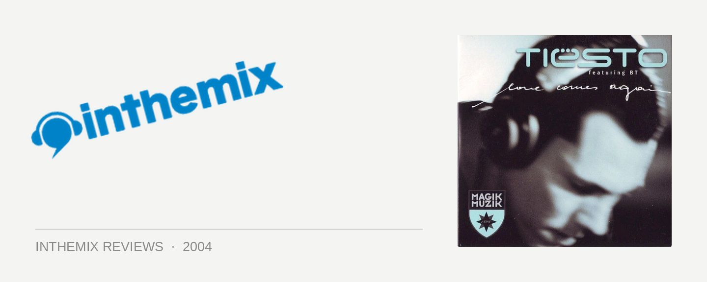

Tiesto feat. BT - Love Comes Again
(Bang On!/Central Station)
Superstar musician team-ups have consistently thrilled the record buying public for as long as popular music has existed: the likes of veterans Sonny & Cher, smooth operators Robbie Williams & Nicole Kidman and America’s golden girls Madonna & Britney Spears have stunned the commercial market and awed audiences worldwide when collating their unbridled talents. And don’t forget, err… Jimmy Barnes and Johnny Farnham. Now Tiesto and BT have come along to rescue us from these corporate fiascos, and punters from around the world can breathe a well-deserved sigh of relief.
The world’s #1 DJ, Tiesto is notorious for blowing minds with his awesome blend of trance. And he’s showing no signs of slowing down with Love Comes Again. Whilst it’s somewhat typical of his regular production sound, Tiesto has constructed a soaring trance-scape of epic proportions, full of sublime filtered strings and his trademark uplifting synths. But it’s not all fluff and fairy floss either, as Love Comes Again retains the subtle techy and progressive elements that remind us why he always remains a step ahead of most everyone else in the global trance scene.
Meanwhile, in offering vocals to the single, BT continues to pursue his aspirations of becoming a fully-fledged member of a boy band. That is, along the lines of N-Sync and The Backstreet Boys, and Human Nature. BT’s boy band overtones were most evident on his recent album Emotional Technology, complete with its horrendous CD cover of him dressed up like a pompous Gary Barlow from Take That’s heyday. What possessed BT to choose that photo as the cover of his album I simply cannot comprehend.
To label BT’s music as anything less than stunning would be selling it well short. He’s one of dance music’s true pioneers, and his influence on the trance, progressive and nu-school sounds that we listen to today can’t even be measured. And his technical skills as a producer are unparalleled: he doesn’t just use the technology, he merges and becomes one with it. But when it comes to vocals, sometimes Brian Transeu’s massive ego gets in the way.
During interviews to promote Emotional Technology, he boasted proudly that he performed vocal duties on over half of the songs on the album. But you can’t help but feel that no one else is quite as interested in BT’s singing career as he is. He’s competent enough as a vocalist, and as a musician he’s got a strong grip on melody. But at the same time, his music is always better when he hauls other vocalists into the studio. And as per usual, his choice of subject matter is a little trite: how many times have we heard “Love comes again” in a trance tune over the past few years?
The remixes on offer are of a pretty standard selection; the Mark Norman mix sounds pretty much the same but pumps the beats just that little bit harder, while some Traffic remixes are also thrown in for good measure. Competent enough, but nothing much really worth mentioning. In the meantime, Tiesto will continue to rock the globe on an unprecedented level, and BT will continue to push technology even further with his incredible production work. But this he should stick to, and spare us any solo singing efforts in the future.